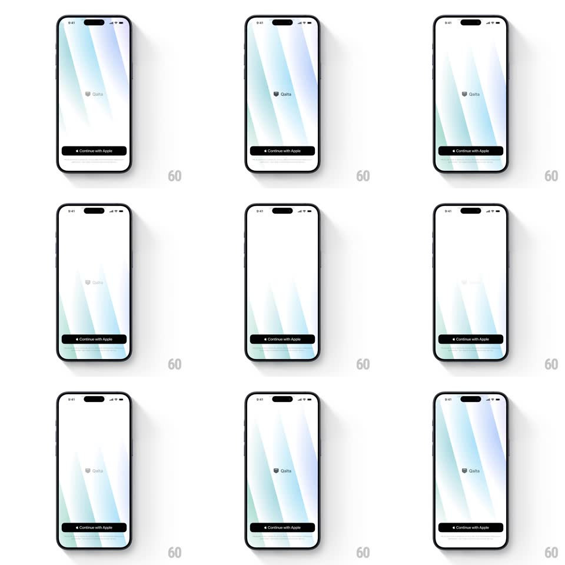

Media
Frame-by-frame

Rebuild this animation 1:1: Qalta's onboarding intro - soft diagonal light beams drift slowly across a white screen behind the centered Qalta logo, with the Continue with Apple button pinned below.

Rebuild this animation 1:1: Qalta's onboarding intro - soft diagonal light beams drift slowly across a white screen behind the centered Qalta logo, with the Continue with Apple button pinned below. ## Integration Integration: stack-agnostic spec - springs given as stiffness/damping, timed motions as duration + curve; map every value to your framework and animation library of choice. ## Scene A white onboarding screen: broad diagonal beams of pale light (ice blue, mint, soft lavender) sweeping across the background, the "Qalta" wordmark with its small shield icon centered, and a black "Continue with Apple" button pinned at the bottom above the home indicator. ## Motion spec Pattern: slow ambient looping gradient beams behind static UI. - Three to four wide diagonal beams (20-30deg tilt, heavily blurred edges) translate slowly across the field - each full pass takes 12-18s, phases offset so the light never clumps. - Beam intensity breathes gently as they move (opacity 0.35 -> 0.55 -> 0.35 per pass) - the screen feels sunlit through moving blinds. - The hues drift subtly between passes (ice blue toward mint, lavender toward pale peach) - a slow hue rotation of ~10deg per loop, never a hard swap. - The Qalta logo and the button are completely static - the calm foreground anchors the moving light. - The loop is seamless: each beam exits one edge as its twin enters the opposite edge. ## Calibration - Everything is slow and low-contrast - if a viewer can name the motion speed, it is too fast. - Beams stay pale on white - never saturate into color blocks; this is light, not a gradient wallpaper. ## Reduced motion A single static soft gradient - no beam movement. ## Don't miss - The logo is small and gray-on-white - the restraint is the brand; don't enlarge or darken it. - Continue with Apple is the only button - no email or guest rows on this screen.